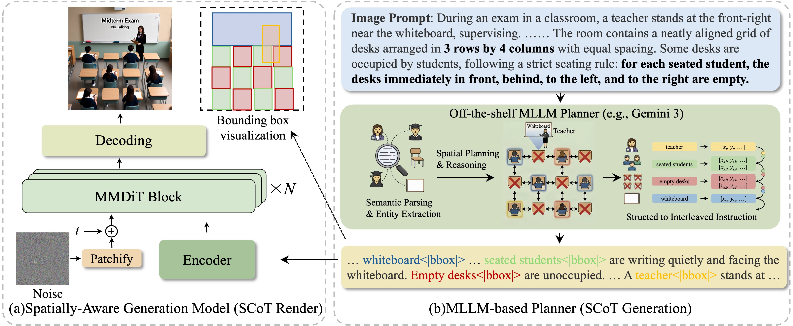

While diffusion models have shown exceptional capabilities in aesthetic image synthesis, they often struggle with complex spatial understanding and reasoning. Existing approaches resort to Multimodal Large Language Models (MLLMs) to enhance this capability. However, they either incur high computational costs through joint training or suffer from spatial information loss when relying solely on textual prompts. To alleviate these limitations, we propose a Spatial Chain-of-Thought (SCoT) framework, a plug-and-play approach that effectively bridges the reasoning capabilities of MLLMs with the generative power of diffusion models. Specifically, we first enhance the diffusion model's layout awareness by training it on an interleaved text-coordinate instruction format. We then leverage state-of-the-art MLLMs as planners to generate comprehensive layout plans, transferring their spatial planning capabilities directly to the generation process. Extensive experiments demonstrate that our method achieves state-of-the-art performance on image generation benchmarks and significantly outperforms baselines on complex reasoning tasks, while also showing strong efficacy in image editing scenarios.
Spatial Chain-of-Thought: Bridging Understanding and Generation Models for Spatial Reasoning Generation
1HKUST
2HIT SZ
3THU
4Kuaishou
5CASIA
Abstract
Method
Spatial CoT Bridge. An off-the-shelf MLLM planner converts a user prompt into an interleaved text–bounding-box Spatial Chain-of-Thought plan, which is then rendered by a spatially-aware diffusion model.

Figure 2. Overview of our plug-and-play framework (MLLM-based planner + spatially-aware renderer).
Key Contributions
- We propose Spatial Chain-of-Thought, a spatial planning process that bridges MLLM planning and diffusion rendering in an efficient and plug-and-play way.
- We build a spatially-aware generation model trained with interleaved text–coordinate instructions, and pair it with an MLLM-based planner that outputs executable bbox-specified layouts for complex spatial constraints.
- We conduct extensive experiments on text-to-image generation and editing benchmarks, showing that our method significantly outperforms baselines in complex scenarios.
Results
Qualitative comparisons.

Figure 3. Qualitative comparison in complex spatial scenes across SOTA models and ours.
BibTeX
@misc{chen2026spatialchainofthoughtbridgingunderstanding,
title={Spatial Chain-of-Thought: Bridging Understanding and Generation Models for Spatial Reasoning Generation},
author={Wei Chen and Yancheng Long and Mingqiao Liu and Haojie Ding and Yankai Yang and Hongyang Wei and Yi-Fan Zhang and Bin Wen and Fan Yang and Tingting Gao and Han Li and Long Chen},
year={2026},
eprint={2602.11980},
archivePrefix={arXiv},
primaryClass={cs.CV},
url={https://arxiv.org/abs/2602.11980},
}